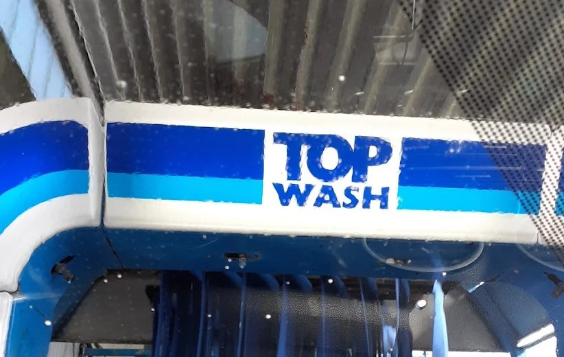
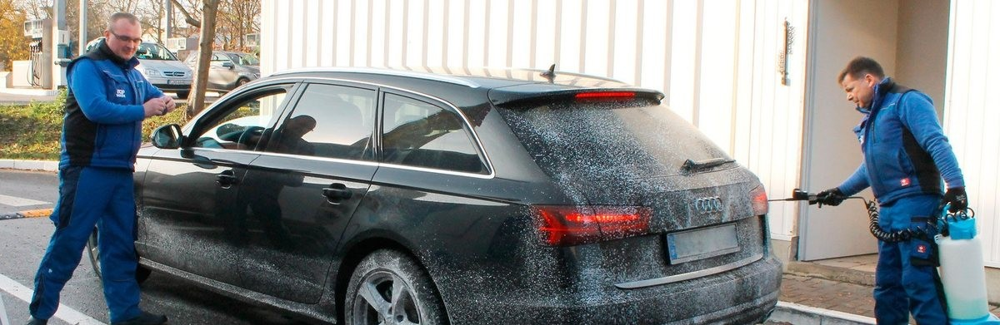
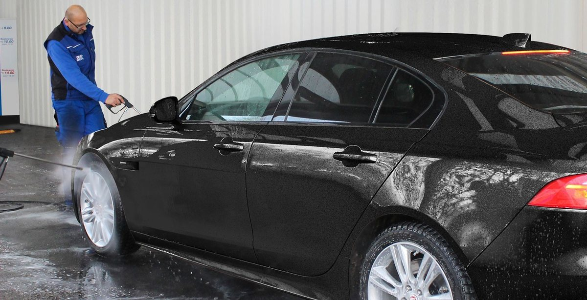
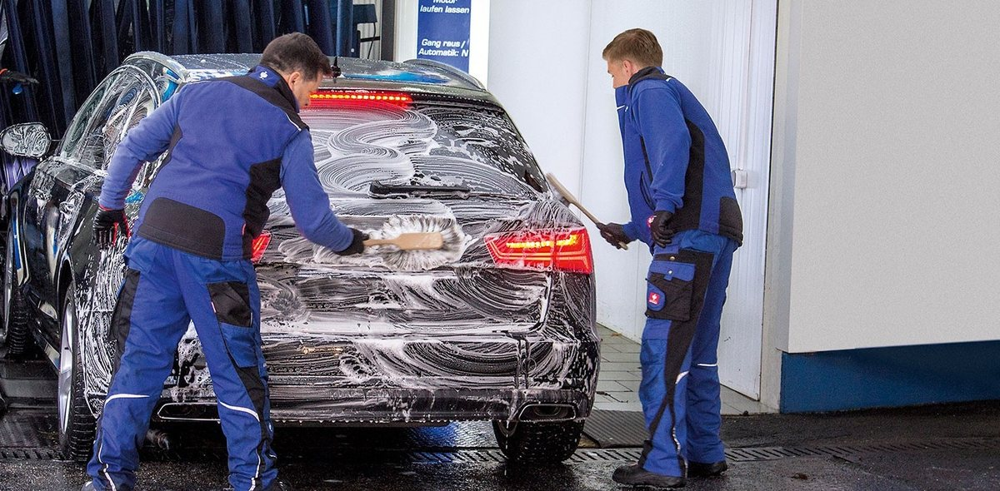

Textile Autowäsche,
die Ihrem Lack schmeichelt.
Sauber wie von Hand gewaschen: gründliche Handvorwäsche, drei Textilwäsche-Stufen und doppelte Trocknung – kombiniert an vier Standorten zwischen Wetterau und Untermain. Kein langes Warten, kein Kompromiss beim Ergebnis.




Ihr TOP WASH-Standort
Vier Waschstraßen in der Region – wählen Sie die für Sie nächstgelegene aus.
Einmal live dabei
Ein kurzer Videoeinblick von unserem Standort Neu-Isenburg – so läuft eine Wäsche bei TOP WASH ab.
4 Standorte in Rhein-Main
Von der Wetterau bis zum Untermain – kurze Wege zur nächsten TOP WASH-Waschstraße.
Geprüftes Waschergebnis
Dreistufige Handvorwäsche plus textile Waschstraße – im ADAC-Test der Waschstraßen mit „GUT" bewertet, hr-Testsieger „Textile Autowaschstraßen".
Wasser im Kreislauf
Unsere Anlagen arbeiten mit Wasseraufbereitung im Kreislaufsystem – weniger Frischwasserverbrauch pro Wäsche.
Vor der Einfahrt: bitte beachten
Damit Ihre Wäsche reibungslos abläuft und Ihr Fahrzeug keinen Schaden nimmt, bereiten Sie es vor der Einfahrt wie folgt vor. Die vollständigen Regelungen finden Sie in unseren AGB.
Scheibenwischer ausschalten
Assistenzsysteme deaktivieren
Antenne einfahren
Tankklappe schließen
Dachträger entfernen
Fenster geschlossen halten
Schiebedach geschlossen halten
Außenspiegel einklappen
Gang auf „N"
Handbremse lösen
Nicht bremsen
Lenkrad nicht festhalten
Motor nicht ausschalten
Vorschäden & Hochglanzfelgen melden
So läuft Ihre Wäsche ab
Sauber wie von Hand gewaschen: Handvorwäsche im Freien, drei Textilwäsche-Stufen und eine doppelte Trocknung sorgen für ein gründliches und zugleich lackschonendes Ergebnis.
1 Gründliche Handvorwäsche im Freien
Bevor Ihr Fahrzeug die Waschstraße erreicht, reinigen unsere Mitarbeitenden die Felgen kostenlos von Hand, tragen einen Schmutzlöser auf und spülen groben Schmutz mit dem Hochdruckreiniger ab. Anschließend werden Ecken, Kanten, Scheiben, Außenspiegel und Heckbereich gezielt von Hand nachgewaschen – die Grundlage für ein streifenfreies Ergebnis.
2 Drei Textilwäsche-Stufen
In der Waschhalle durchläuft Ihr Fahrzeug gleich drei Textilwäsche-Stufen – zwei mehr als in herkömmlichen Autowaschanlagen üblich. Weiche Textillamellen umschließen die Karosserie und tragen Schaum und Reinigungslösung mehrfach gleichmäßig auf, während Felgenbürsten und Unterbodenwäsche gezielt nachreinigen. Das textile Verfahren gilt als besonders lackschonend im Vergleich zu Bürstenanlagen mit hartem Material.
3 Doppelte Trocknung mit Polier-Effekt
Zwei besonders leistungsstarke Gebläse trocknen die Karosserie streifenfrei vor, bevor eine abschließende Textiltrocknung den Lack zusätzlich poliert. Bei Bedarf reinigen Sie am Staubsauger-Terminal Fußräume und Polster selbst nach – kostenlose Reinigungstücher für Innenspiegel und Scheiben liegen an jedem Standort bereit.
Unsere Waschprogramme
Fünf gestaffelte Programme – von der schnellen Außenwäsche bis zur Rundum-Pflege. Alle Preise inkl. MwSt.
Soft-Schaum
12,00 €
- ✓ Handvorwäsche
- ✓ Felgenreinigung
- ✓ Textilwäsche außen
- ✓ Trocknung
Komplett
15,00 €
- ✓ Wie Soft-Schaum
- ✓ Wachs-Versiegelung
- ✓ Unterboden-Wäsche & -Rostschutz
Lotus
18,00 €
- ✓ Wie Komplett
- ✓ Lotus-Glanz
DAS BESTE
20,00 €
- ✓ Wie Lotus
- ✓ Poliertrocknung
Superschaum
23,00 €
- ✓ Wie DAS BESTE
Unsere Highlights
Das macht TOP WASH-Wäschen besonders.
Lotus-Glanz
Versiegelnde Politur nach dem Lotus-Effekt: Wasser perlt einfach ab, Schmutz haftet spürbar schlechter – ab dem Programm „Lotus".
Superschaum
Intensiv-Vorwäsche mit besonders dichtem, hochwirksamem Schaum für gründlich gelösten Schmutz – exklusiv im Programm „Superschaum".
Textile Poliertrocknung
Nach den Gebläsen sorgt eine abschließende Textiltrocknung nicht nur für Streifenfreiheit, sondern zusätzlich für Politur-Effekt – bei jeder Wäsche inklusive.
Bewertungen unserer Kunden
Nachlesbar direkt bei Google – hier sehen Sie, wie unsere Kunden TOP WASH bewerten.
4,5/5
651 Google-Bewertungen
ADAC Test Waschstraßen
Gesamtnote „GUT"
hr-Testsieger
„Textile Autowaschstraßen"
Bewertung ansehen oder schreiben – bitte Standort wählen:
Vor der Einfahrt: bitte beachten
Damit Ihre Wäsche reibungslos und ohne Schäden verläuft, bitten wir Sie um Folgendes.
Scheibenwischer ausschalten und Regensensor deaktivieren.
Bitte alle Fahrassistenzsysteme deaktivieren (z. B. Spurhalte- und Notbremsassistent).
Antenne unbedingt entfernen oder einfahren, Tankklappe verschließen.
Dachträger & Skihalter entfernen, Fenster und Schiebedach geschlossen halten, Außenspiegel bei Bedarf einklappen.
In der Anlage: Gang raus bzw. Wahlhebel auf „N", Handbremse lösen und nicht bremsen, Lenkrad nicht festhalten, Motor bitte nicht ausmachen. Bei Fahrzeugen mit elektronischer Feststellbremse und „Auto Hold"-Funktion diese vor der Einfahrt deaktivieren, da die Bremse sonst automatisch wieder greift.
Hochglanz-Alufelgen und Vorschäden am Lack (Steinschläge, Folierung, Nachlackierungen) bitte vor der Wäsche beim Personal melden.
Passt Ihr Fahrzeug in die Anlage?
Unsere Portalanlagen sind auf die gängigen Fahrzeugklassen ausgelegt – vom Kleinwagen bis zum großen SUV oder Van. Zulässig sind (Karosse über alles, inkl. Spiegel – Spiegel notfalls einklappen):
- Breite bis max. 200 cm
- Höhe bis max. 205 cm
- Bodenfreiheit mind. 7,5 cm
- Überhang vorn/hinten max. 31,5 cm
Keine Waschstraßenbenutzung für Geländewagen mit seitlich abstehendem Reserverad. Fahrzeuge mit außen liegendem Ersatzrad sind bis zu einem Radstand von max. 320 cm geeignet. Bei Fragen wenden Sie sich bitte an unser Fachpersonal vor Ort.
Häufige Fragen
Muss ich mit langen Wartezeiten rechnen?
An jedem Standort sind mindestens zwei, bei trockenem Wetter meist drei bis fünf und zu Stoßzeiten bis zu sieben Mitarbeitende im Einsatz. Dadurch entstehen in der Regel keine oder nur kurze Wartezeiten – unsere Anlagen waschen bis zu 60 bis 70 Fahrzeuge pro Stunde.
Haftet TOP WASH für Schäden an meinem Fahrzeug?
Wir arbeiten sorgfältig, weisen aber wie jeder Waschstraßenbetreiber auf Haftungsgrenzen hin: ausgeschlossen sind Schäden an nicht werkseitig verbautem Zubehör, an Fahrzeugen mit Vorschäden, Nachlackierungen, sichtbaren Lackschäden oder Folierung, an hochglanzpolierten Felgen sowie bei Fahrzeugen mit Erstzulassung vor mehr als 25 Jahren. Bitte melden Sie Besonderheiten vor der Wäsche am Terminal.
Ist mein Fahrzeug für die Waschstraße geeignet?
Unsere Anlagen sind für nahezu alle gängigen Fahrzeugtypen ausgelegt – vom Kleinwagen über die Limousine bis zum großen SUV oder Van. Abnehmbare Dachboxen, Fahrradträger und lose Anbauteile sollten vorher entfernt werden, damit Ihr Fahrzeug sicher durch die Anlage fährt.
Ich fühle mich unwohl dabei, im Auto durch die Anlage zu fahren – geht das auch anders?
Ja. Wenn Sie möchten, übernimmt unser Team das Durchfahren der Anlage für Sie, während Sie außerhalb warten – sprechen Sie unser Personal einfach am Einfahrtsterminal darauf an.